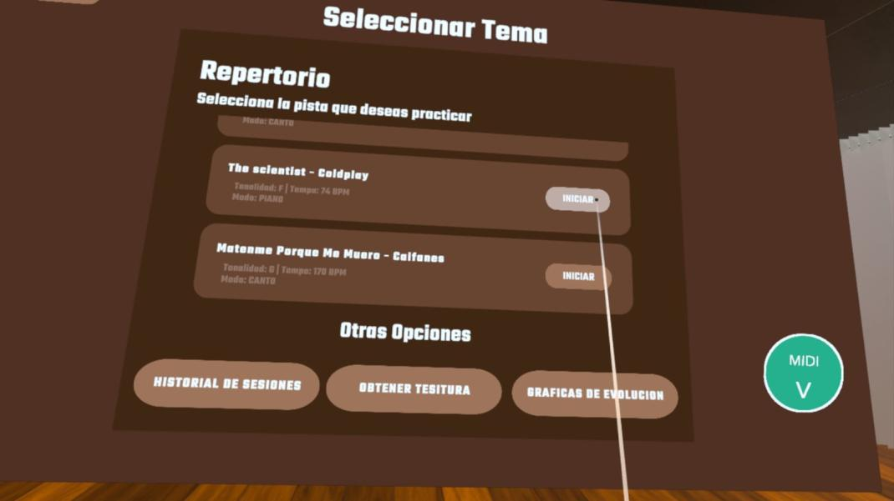
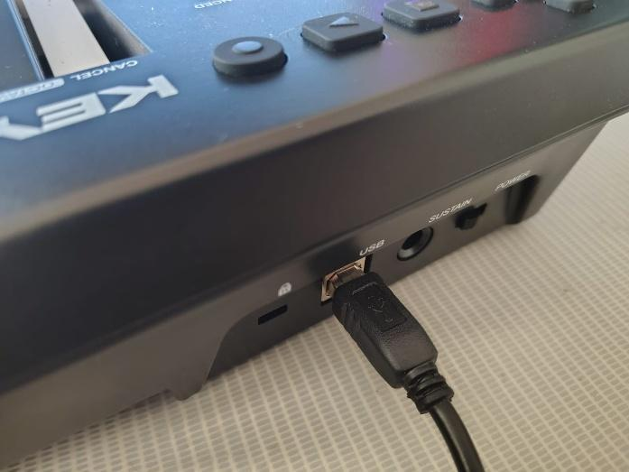
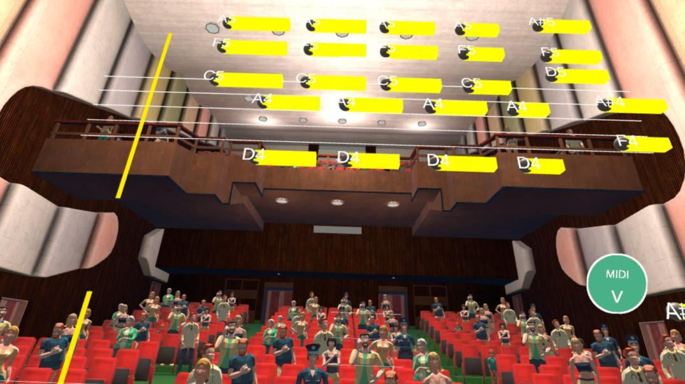
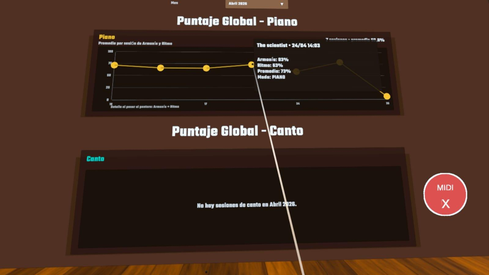
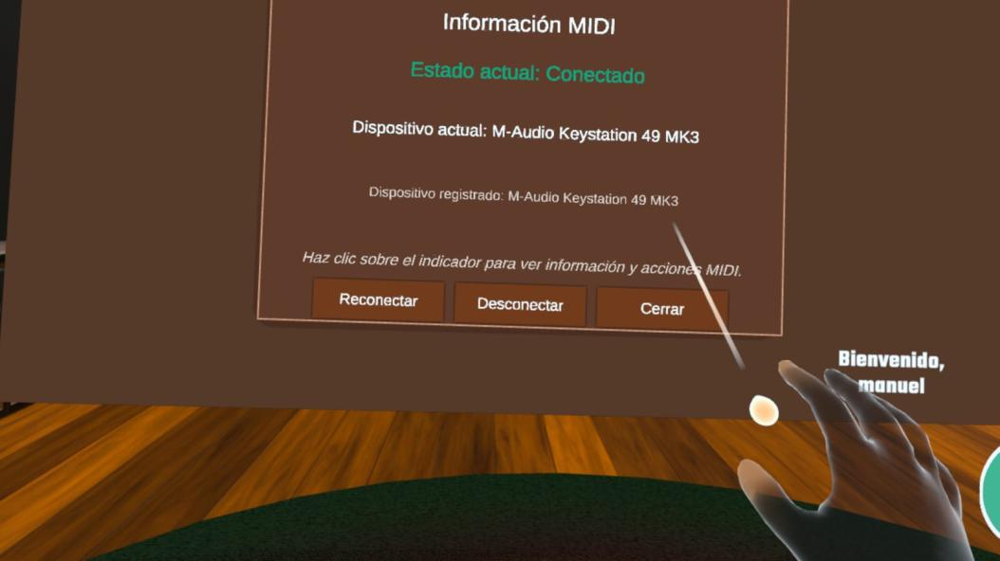
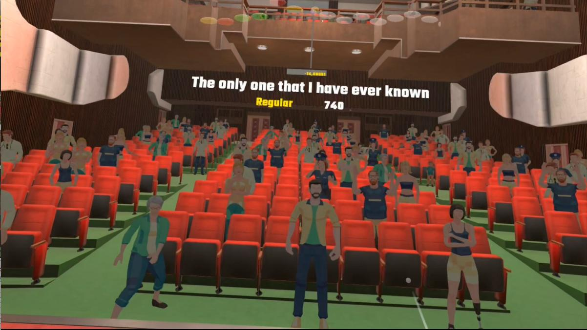
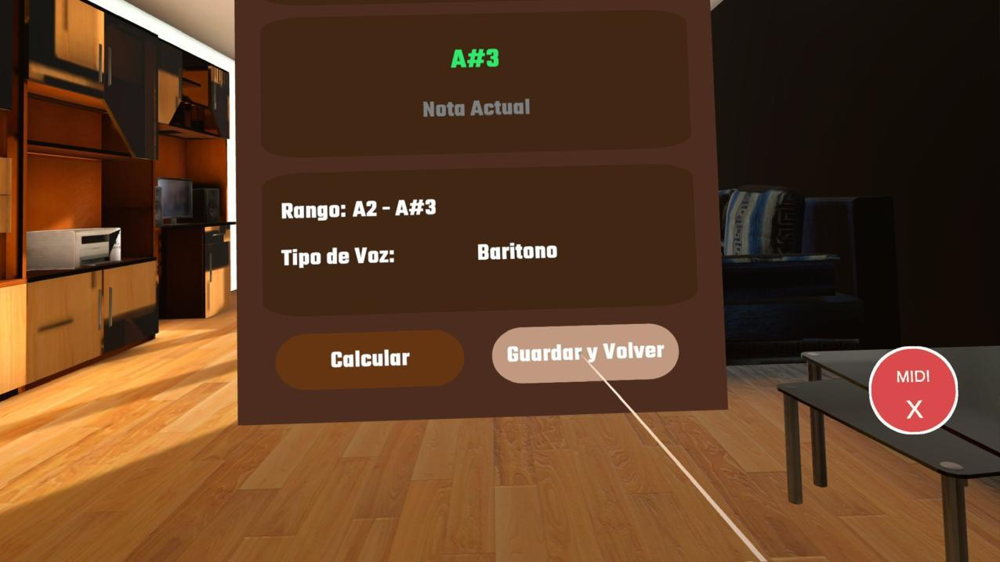
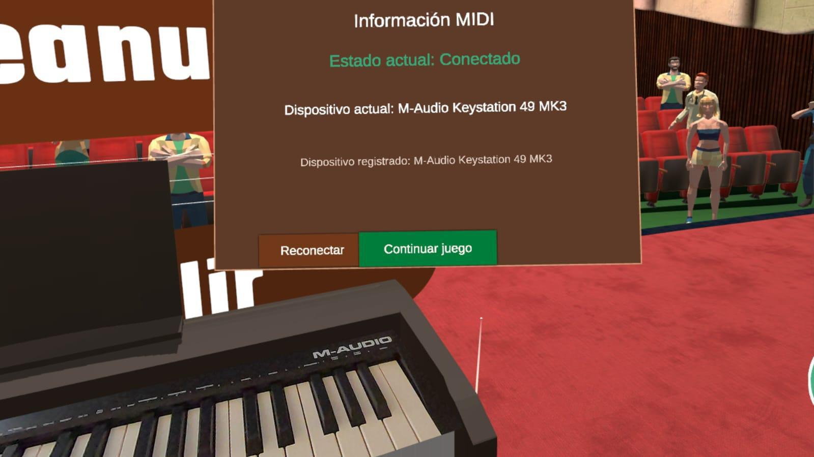

Plataforma inmersiva de entrenamiento musical en Meta Quest 3 con procesamiento de audio en tiempo real y MIDI de latencia mínima

EtheriaVR es una plataforma inmersiva de entrenamiento musical desarrollada para Meta Quest 3. Combina VR, procesamiento de audio avanzado y entrada MIDI de latencia mínima para revolucionar el aprendizaje musical.
La arquitectura integra: backend FastAPI con MySQL, cliente Python en PC para comunicación UDP, procesamiento de audio con algoritmo Yin en C#, y Meta Quest 3 como interfaz inmersiva con passthrough y hand tracking.
Descubre cómo EtheriaVR transforma el entrenamiento musical

El teclado MIDI se conecta directamente a Meta Quest 3 mediante USB-C, logrando latencia mínima imperceptible. No hay intermediarios: los datos van directo del instrumento al procesador.
Cada nota, pulsación y cambio de parámetro se captura en tiempo real y se procesa inmediatamente en C# para renderizar el pentagrama dinámico con retroalimentación visual instantánea.

En Meta Quest 3 ves el pentagrama musical en VR mientras tocas. El público virtual reacciona en tiempo real: aplaude, grita, baila si lo haces bien; se silencia y apaga si cometes errores.
Passthrough permite ver el teclado real a través de la VR. Hand tracking automático y posibilidad de trazar áreas del mundo real para referencias visuales durante la práctica.

El algoritmo Yin detecta la frecuencia fundamental de cada nota. Se compara automáticamente: tono exacto, tiempo de duración, cents de afinación (sube o baja del usuario).
Cada sesión genera puntuación y gráficas de progreso almacenadas en la BD MySQL. Visualiza tu desarrollo a través del tiempo con métricas precisas de precisión y consistencia técnica.
Mira cómo funciona EtheriaVR en tiempo real
Muestra del funcionamiento del sistema en modo piano
Cómo está construido EtheriaVR
FastAPI proporciona APIs de alto rendimiento con validación automática, async/await nativo y documentación Swagger.
Cliente Python en PC que captura audio y actúa como puente entre audio y Meta Quest 3.
Aplicación en C# para Meta Quest 3 con procesamiento de audio avanzado y renderización VR.
APIs REST para datos, MIDI USB-C directo, UDP para audio, todos en red local.
1. Entrada MIDI: Teclado MIDI conectado directamente a Meta Quest 3 vía USB-C. Latencia mínima sin intermediarios.
2. Procesamiento en C#: Meta Quest 3 procesa MIDI, aplica algoritmo Yin para detectar frecuencia fundamental, compara tono/tiempo/cents.
3. Audio UDP: Cliente Python en PC captura audio, lo envía por UDP a Meta Quest 3. Comunicación de baja latencia en red local.
4. Backend FastAPI: Almacena resultados de sesiones en MySQL, retorna gráficas y análisis. Dockerizado para despliegue.
Más capturas del desarrollo




Tecnologías y herramientas utilizadas
Beneficios técnicos y pedagógicos
MIDI USB-C directo + UDP local + C# en Meta = latencia imperceptible. Mejor experiencia de tiempo real posible.
Algoritmo Yin detecta frecuencia fundamental con precisión. Comparación exacta de tono, tiempo y cents de afinación.
FastAPI async + MySQL containerizado con Docker. Arquitectura lista para crecer sin problemas de rendimiento.
Meta Quest 3 con passthrough, hand tracking y público virtual que reacciona. Aprendizaje musical del futuro.
Visita el repositorio para ver el código completo